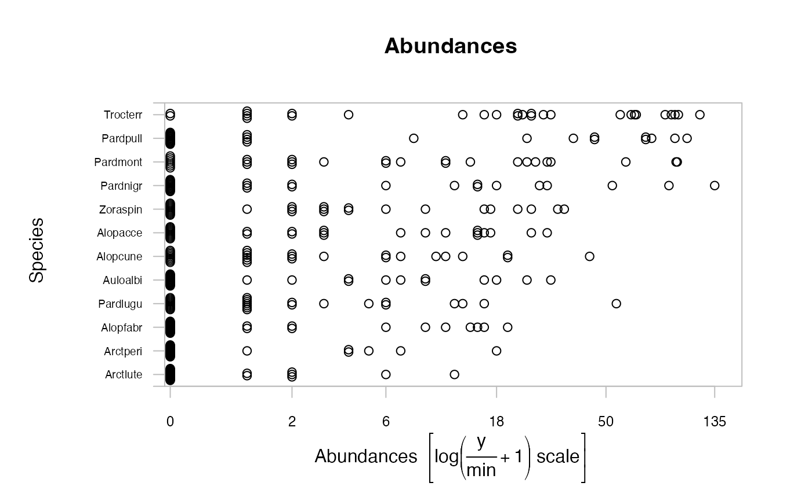

spider.Rddata from spider2 directory, CANOCO FORTRAN package, with trait variables added.
data(spider)A list containing the elements
A matrix with 28 observations of abundance of 12 hunting spider species
A data frame of six (transformed) environmental variables at each of the 28 sites.
A data frame of three species traits for each of the 12 species.
The matrix abund has the following variables
(numeric) Abundance of the species Alopecosa accentuata
(numeric) Abundance of the species Alopecosa cuneata
(numeric) Abundance of the species Alopecosa fabrilis
(numeric) Abundance of the species Arctosa lutetiana
(numeric) Abundance of the species Arctosa perita
(numeric) Abundance of the species Aulonia albimana
(numeric) Abundance of the species Pardosa lugubris
(numeric) Abundance of the species Pardosa monticola
(numeric) Abundance of the species Pardosa nigriceps
(numeric) Abundance of the species Pardosa pullata
(numeric) Abundance of the species Trochosa terricola
(numeric) Abundance of the species Zora spinimana
The data frame x has the following variables
(numeric) Soil dry mass
(numeric) Cover bare sand
(numeric) Cover fallen leaves / twigs
(numeric) Cover moss
(numeric) Cover herb layer
(numeric) Reflection of the soil surface with a cloudless sky
These variables have already been log(x+1)-transformed.
The data frame trait was constructed by Googling each species and recording variables from species descriptions and images of specimens:
(numeric) Length (log-transformed), averaged across typical lengths (in centimetres) for male and females
(factor) Predominant colour, "yellow" or "dark"
(factor) Whether the spider typically has markings on it: "none", "spots" or "stripes"
Data attributed to van der Aart & Smeenk-Enserink (1975), obtained from the spider2 directory, CANOCO FORTRAN package. Trait data largely extracted from Wikipedia entries for the species.
ter Braak, C. J. F. and Smilauer, P. (1998) CANOCO reference manual and user's guide to CANOCO for Windows: software for canonical community ordination (version 4). Microcomputer Power, New York, New York, USA.
van der Aart, P. J. M., and Smeenk-Enserink, N. (1975) Correlations between distributions of hunting spiders (Lycos- idae, Ctenidae) and environmental characteristics in a dune area. Netherlands Journal of Zoology 25, 1-45.
The abundance of each species was measured as a count of the number of organisms in the sample.
require(graphics)
data(spider)
spiddat <- as.mvabund(spider$abund)
plot(spiddat)
#> Kicking off BoxPlot sequence
#> Overlapping points were shifted along the y-axis to make them visible.
#>
#>
#> ABOUT TO PLOT THE FUNCTION
#>
